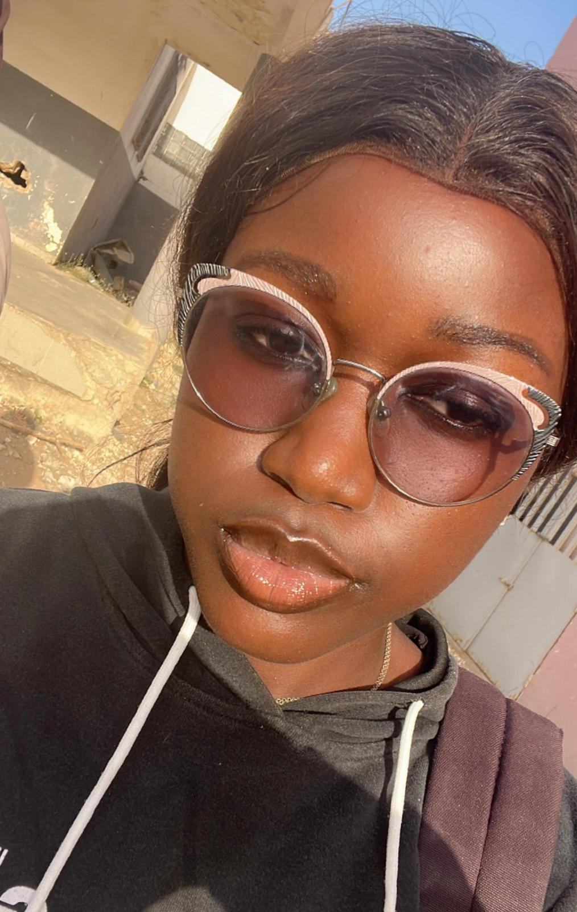

Étudiante DUT2 Finance-Comptabilité
Bonjour, je suis Ndeye Fatou Ndiaye
Curieuse, sérieuse et passionnée par l'audit externe et la finance d'entreprise.

Présentation
Je suis étudiante en DUT2 finance-comptabilité à l’École Supérieure Polytechnique de Dakar. Je m’intéresse à l’audit externe et à la finance d’entreprise. Curieuse, sérieuse et ayant un bon esprit d’analyse.
Coordonnées
Grand Mbao, Cité Syprom, Villa 117
+221 77 737 60 46
joliemedoune@gmail.com
25/11/2006
Formation
- DUT2 Finance-Comptabilité (2025-2026 en cours) - ESP Dakar
- DSECG1 Comptabilité et Gestion (2024-2025) - ESP Dakar
- Baccalauréat Série S2 (2023-2024) - CABIS SCHOOL Dakar
Attestations
- DEC : Diplôme Elémentaire Comptable (2024-2025)
Hobbies
Compétences
- Pack Office : Word, Excel, PowerPoint
- Connaissance fiscale de base
- Principes comptables
- Bases de la fiscalité
- Maîtrise de l’analyse financière
- Maîtrise de l’ordonnancement de projet (Recherches Opérationnelles)
Culture d’origine
Originaire du Sénégal, je suis fière de ma culture wolof et de sa richesse. Je m’exprime en wolof, français et anglais, avec une sensibilité forte pour le travail collaboratif et le respect des traditions familiales.
La culture wolof est l'une des principales composantes de l'identité sénégalaise. Elle repose sur des valeurs telles que la teranga (hospitalité), le respect des aînés, la solidarité et le sens de la communauté. La langue wolof, largement parlée au Sénégal, contribue à la transmission des traditions et des coutumes. Cette culture se manifeste également à travers la musique, la danse, la cuisine traditionnelle et les cérémonies familiales et religieuses, qui occupent une place importante dans la vie quotidienne.